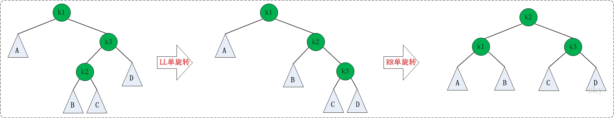

平衡二叉树
平衡二叉树
AVL树，任何节点的两个子树的高度最大差别为1，所以，也称为高度平衡二叉树。查找，插入和删除在平均最坏的情况下都是O(log n)
定义节点：
public class AVLTree<T extends Comparable<T>> {
private AVLTreeNode<T> mRoot;
class AVLTreeNode<T extends Comparable<T>> {
T key;
int height;
AVLTreeNode<T> left;
AVLTreeNode<T> right;
public AVLTreeNode(T key, AVLTreeNode<T> left, AVLTreeNode<T> right) {
this.key = key;
this.left = left;
this.right = right;
this.height = 0;
}
}
}
AVL树失衡 一定是 LL， LR，RR，RL。


LL左单旋转
private AVLTreeNode<T> llRotation(AVLTreeNode<T> k2) {
AVLTreeNode<T> k1;
k1 = k2.left;
k2.left = k1.right;
k1.right = k2;
k2.height = max(height(k2.left), height(k2.right)) + 1;
k1.height = max(height(k1.left), k2.height) + 1;
return k1;
}

RR旋转
private AVLTreeNode<T> rrRotation(AVLTreeNode<T> k1) {
AVLTreeNode<T> k2;
k2 = k1.right;
k1.right = k2.left;
k2.left = k1;
k1.height = max(height(k1.left), height(k1.right)) + 1;
k2.height = max(height(k2.right), k1.height) + 1;
return k2;
}

LR旋转
private AVLTreeNode<T> lrRotation(AVLTreeNode<T> k3) {
k3.left = rrRotation(k3.left);
return llRotation(k3);
}

RL旋转
private AVLTreeNode<T> rlRotation(AVLTreeNode<T> k1) {
k1.right = llRotation(k1.right);
return rrRotation(k1);
}

插入节点（建树）
private AVLTreeNode<T> insert(AVLTreeNode<T> tree, T key) {
if(tree == null) {
tree = new AVLTreeNode<T>(key, null, null);
} else {
int cmp = key.compareTo(tree.key);
if(cmp < 0) {
tree.left = insert(tree.left, key);
if(height(tree.left) - height(tree.right) == 2) {
if (key.compareTo(tree.left.key) < 0)
tree = llRotation(tree);
else
tree = lrRotation(tree);
}
} else if(cmp > 0) {
tree.right = insert(tree.right, key);
if(height(tree.right) - height(tree.left) == 2) {
if(key.compareTo(tree.right.key) > 0)
tree = rrRotation(tree);
else
tree = rlRotation(tree);
}
}
}
return tree;
}
判断一个颗树是否是平衡二叉树
int depth(TreeNode* root) {
if(!root) return 0;
return 1 + max(depth(root->left), depth(root->right));
}
bool isBalance(TreeNode* root) {
if(!root) return true;
if(!isBalance(root->left)) return false;
if(!isBalance(root->right)) return false;
int depthLeft = depth(root->left);
int depthRight = depth(root->right);
if(abs(depthLeft - depthRight) > 1)
return false;
return true;
}
bool isBalanced(TreeNode* root, int &height) {
if(!root) return true;
int left = 0, right = 0;
if(!isBalanced(root->left, left)) return false;
if(!isBalanced(root->right, right)) return false;
if(abs(left - right) > 1) return false;
height = max(left, right) + 1;
retrun true;
}
二叉树翻转
public TreeNode invertTree(TreeNode root) {
if(root == null) {
return null;
}
root.left = invertTree(root.left);
root.right = invertTree(root.right);
TreeNode tmp = root.left;
root.left = root.right;
root.right = tmp;
return root;
}